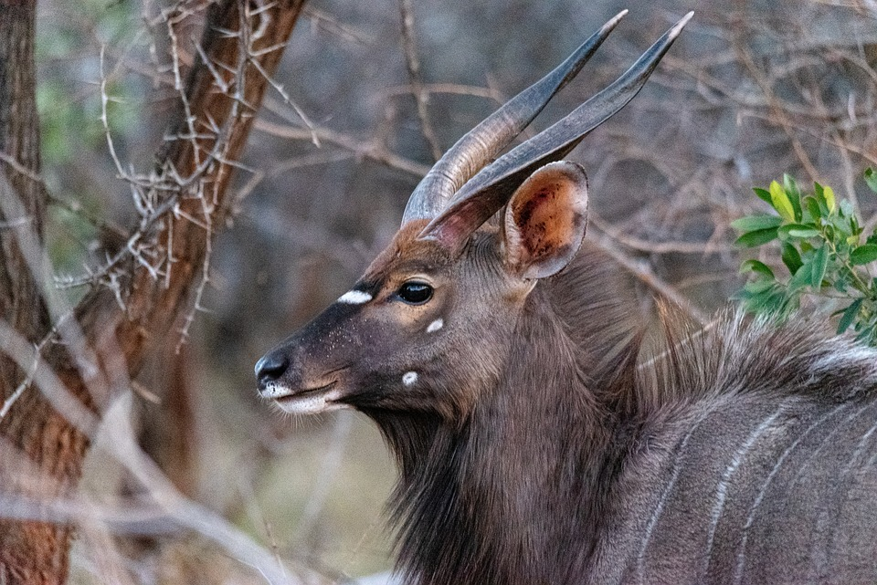
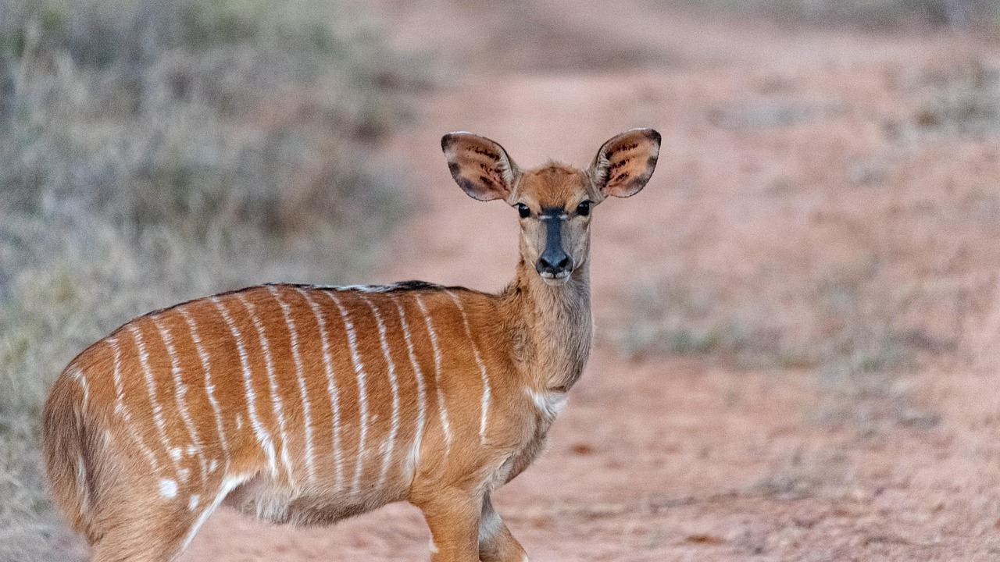
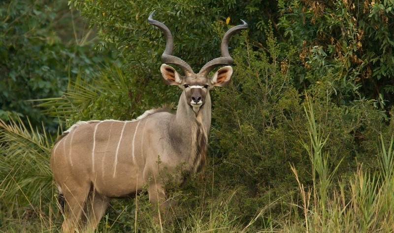
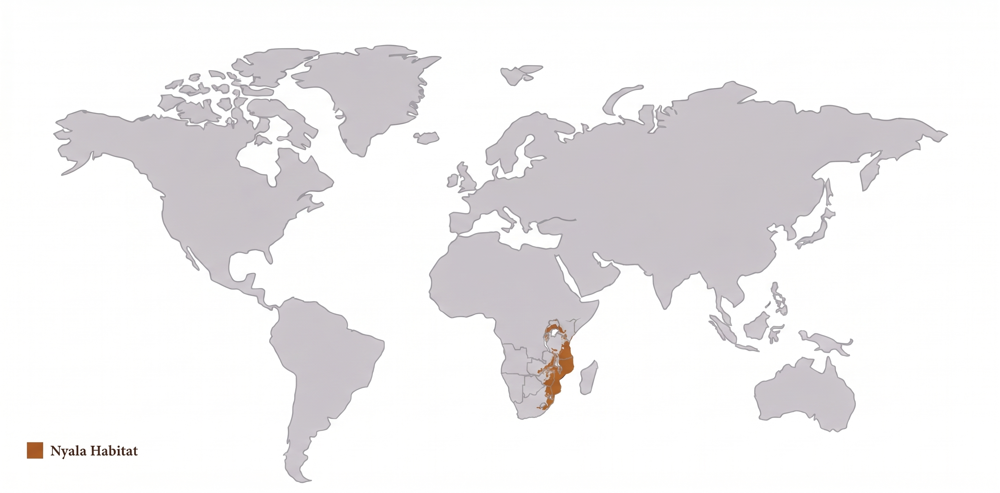

Niala
Tragelaphus angasii
A niala (Tragelaphus angasii) é um dos antílopes mais graciosos e elegantes de África, destacando-se pelo notável dimorfismo sexual. Enquanto as fêmeas e as crias ostentam uma pelagem avermelhada e brilhante adornada com finas listras brancas verticais, os machos adultos apresentam um tom castanho-escuro quase cinzento, uma crina peluda nas costas e impressionantes chifres espiralados com pontas amarelas. Apesar da sua aparência pacífica e de preferirem mover-se com extrema cautela através de vegetação densa, são animais extremamente atentos e capazes de se deslocar com grande agilidade perante qualquer sinal de perigo.
Habitat Natural

A niala habita preferencialmente zonas de savana arborizada densa, matagais espessos e florestas de transição que fiquem sempre muito próximas de fontes de água permanente. Estes antílopes evitam planícies abertas e expostas, dependendo da cobertura de arbustos densos e árvores frondosas para se refugiarem dos predadores e para encontrarem sombra durante as horas mais quentes do dia. A sua distribuição natural concentra-se sobretudo na região sudeste do continente africano, adaptando-se perfeitamente a vales fluviais e áreas pantanosas arborizadas.
Dieta
A niala é um herbívoro de dieta flexível e mista, com uma forte tendência para o pastoreio de folhagem e rebentos. Cerca de 70% a 80% da sua alimentação diária é composta por folhas tenras, arbustos, flores, caules e frutos caídos no chão, complementando ocasionalmente com ervas frescas. Durante as épocas de maior secura, a sua capacidade de selecionar os nutrientes mais ricos e a dependência de vegetação ribeirinha permitem-lhe sobreviver em locais onde outras espécies de antílopes enfrentam escassez alimentar.
Curiosidades
- Os machos adultos adotam frequentemente posturas de exibição lateral para parecerem maiores perante os rivais, inflando o pelo da crina dorsal e caminhando lentamente com passos rígidos.
- As crias recém-nascidas passam os primeiros dias de vida escondidas num abrigo de vegetação densa, sendo visitadas apenas esporadicamente pela mãe para amamentação até ganharem força para se juntarem ao grupo.
As nossas Nialas
No Zoo Jonçela, um grupo harmonioso de nialas — liderado pelo majestoso macho Kito e acompanhado pelas fêmeas Zola e Nandi — encanta todos os visitantes pela sua elegância. Com 6 anos de idade, o Kito possui uma pelagem escura imponente e chifres magnificamente espiralados que medem perto de 75 centímetros, pesando cerca de 115 kg. A Zola e a Nandi, com 4 e 3 anos respetivamente, exibem a pelagem avermelhada caraterística e uma compleição mais ágil, pesando em torno de 65 kg cada. Todas partilham um recinto arborizado que simula o seu habitat natural, onde demonstram a sua atitude calma e curiosa.